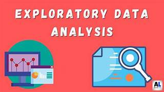
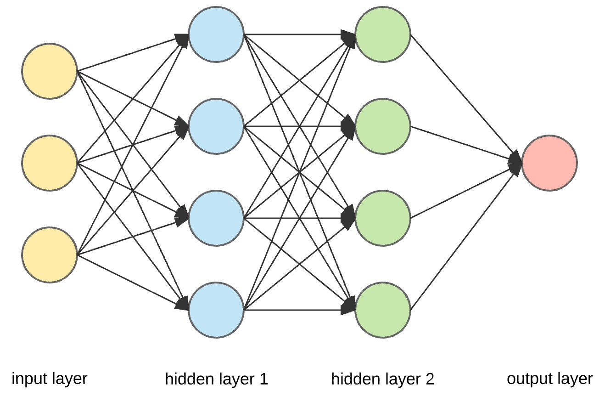

My name is Rachel Rolle
I am a data enthusiast with a deep passion for big data, data visualization, and predictive modeling.
I have demonstrated expertise in various programming languages including R, Python, SQL, and Matlab.
My interests span across multiple domains including Health, Finance, Business, and Transportation Systems.
I am dedicated to leveraging data to drive insights, make informed decisions, and solve complex problems
Description: Using OneClass Support Vector Machine to detect misinformation in tweets.
Tools: Python, VS Studio, Sklearn, OneClassSVM

Description: Used dplyr to analyze government payrolls by each state and position.
Tools: R, Rstudio, Excel
Exploratory Data Analysis

Description: The purpose of this project is to get a better understanding of the data provided and better familiarize myself with the SQL EDA process, Tableau, and Python visual tools.
Tools: SQL (MySQL), Tableau, Python (Visual Studio)
Description: This project aims to predict whether an injury has occured in an car accident location
in the Montgomery County area. The following models were fitted for this classification problem: Logistic
Regression, Quadratic Discriminant Analysis (QDA), Random Forest, and Support Vector Machine (SVM)
Tools: Excel, Rstudio
Implementing OC-CNN to
Perform Outlier Detection

Description: Using OneClass Convolutional Neural Networks (OC-CNN) to detect misinformation in tweets.
Tools: Python, VS Studio, Sklearn, Tensorflow
Description: Interactive car accident report.
Tools: MATLAB